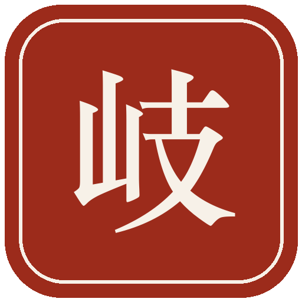

iCAN AI 应用创新挑战赛 · 参赛项目
岐思QISI
AI辅助中医辨证思维训练平台
面向人工智能辅助中医教育，通过结构化病例、四诊信息交互与辨证推演训练，帮助学习者培养中医临床思维。
项目背景
让辨证思维在交互中生长
中医临床能力的核心，是「辨证论治」的思维训练。传统中医教育长期依赖师徒相授与临床跟诊， 学习者接触真实病例的机会有限，辨证思维难以仅靠书本记忆与纸面考试得到锻炼。
岐思 QISI 以「人工智能辅助中医教育」为应用场景，将典型医案整理为可交互的教学场景， 让学习者像接诊一样从「望、闻、问、切」出发，逐步采集四诊信息、完成辨证推演， 在反复训练中建立有据可依的中医临床思维。
核心功能
四个环节，构成一次完整的辨证训练
从读主诉到揭晓医案，每一步都在主动思考，而非被动浏览。
结构化教学病例
按难度（入门 / 综合 / 临床思维）与疾病方向分层的标准化病例库，把典型医案整理为适合交互学习的教学场景。
四诊信息交互
以望、闻、问、切四诊为基础，逐项探索并解锁线索，模拟门诊问诊的信息采集过程，线索不会预先摆上桌。
辨证推演训练
学习者依据采集到的四诊信息，独立给出证型、病名与辨证依据，再对照标准医案解析复盘自己的思路。
学习进度与错题本
本地记录学习进度与错题，支持错题复习与进度备份，形成「训练—复盘—再训练」的持续学习闭环。
AI 应用价值
AI 在项目中的作用
人工智能以「辅助」的方式服务于教学训练，不替代学习者的临床思维判断。
AI辅助教学病例构建
利用人工智能辅助生成和优化教学案例，帮助构建不同难度、不同疾病方向的训练场景，让病例内容更丰富、更贴近教学需要。
AI辅助中医知识结构化
将传统中医四诊信息、证型特点和辨证逻辑进行结构化组织，形成适合交互学习的病例模型，降低知识整理与场景搭建的成本。
未来扩展方向
以下为后续探索方向，当前尚未实现：
- AI模拟患者问诊
- AI辅助辨证思路反馈
- 个性化学习路径推荐
说明：目前项目中的 AI 主要承担病例内容辅助整理与知识结构化支撑，上述扩展方向为规划展望，未虚构为已实现功能。
体验前请先查看数据来源与版权说明。